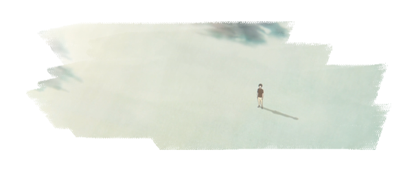

"A Silent Voice" (Koe no Katachi) has received numerous awards and nominations. Key wins include the Tokyo Anime Award for Best Film and Best Screenplay/Original Story in 2017, and the Japan Movie Critics Award for Best Animated Feature Film. It was also recognized at the Behind the Voice Actors Awards and the Anime Trending Awards. While nominated for prestigious awards like the Japan Academy Film Prize and the Annecy International Animated Film Festival, it didn't win in those categories.
When Shoko (Saori Hayami) arrives in her new elementary school and tells her classmates that she cannot hear, she is thrown into the centre of their little world – she is somebody new who suddenly breaks up their day-to-day routine of sitting at the same desks in the same class next to the same kids. Some of them fawn over her in the way of a child that likes to be told how good they are, some complain about the extra attention she receives, some just genuinely want to make friends with her.
Ishida (Miyu Irino), meanwhile, wants to torture her. We’re never definitely sure why, whether it’s a crush he doesn’t know how to act on, a plea for attention or just the simple and immediate hatred of anything different. Whatever the reason, he torments her day after day, stealing her hearing aids and wrecking her notebooks while his friends giggle around him.
One day the teacher tells them that Shoko has had to move school and demands to know who has been bullying her, and suddenly Ishida’s friends aren’t his friends anymore – they turn him in and ostracise him, making him into a sacrifice which they can transfer their own sins on to. Years later, an Ishida made more considerate by his exile meets Shoko once again and tries to redeem himself.
A Silent Voice does a great job of capturing the period in life when high school seems like the whole world and its dramas take on the dimensions of existential quests, every hurt feeling or frayed relationship an excruciating blow to the deepest level of your soul. Naoko Yamada crafts a hazy, nostalgic visual style perfect for exploring the ideas of guilt and memory which drive its plot but it’s the movies colourful, finely-tuned cast of characters which make it so easy to spend time with.
I think the key to this film, and to the characters of Shoko (Saori Hayami), Shoya (Miyu Irino / Mayu Matsuoka [kid]), Ueno (Yuki Kaneko), and the other friends from elementary who end up in the same group later, is self-loathing in its various forms. Shoko is different, because hers stems from the trouble she feels she causes everyone, which objectively is true but of course what she (and her tormenters) see as “trouble” we see as a lack of basic human decency on the part of the bullies. Shoya and co.’s self-loathing stems from their guilt at bullying Shoko, and it manifests in different forms: major guilt complex (Shoya), self-righteous denial (Ueno), rationalization (Kawai [Megumi Han]), cowardice (Sahara [Yui Ishikawa]), etc.
What Shoko’s suicide does is to make everyone see that everyone is basically in the same boat of guilt, and Shoya’s ability to step outside his self-imposed exile is metonymic for everyone else. Actually, that’s my biggest complaint about this film: too cliché. (Of course maybe I would feel different if I were in their group . . . .)
